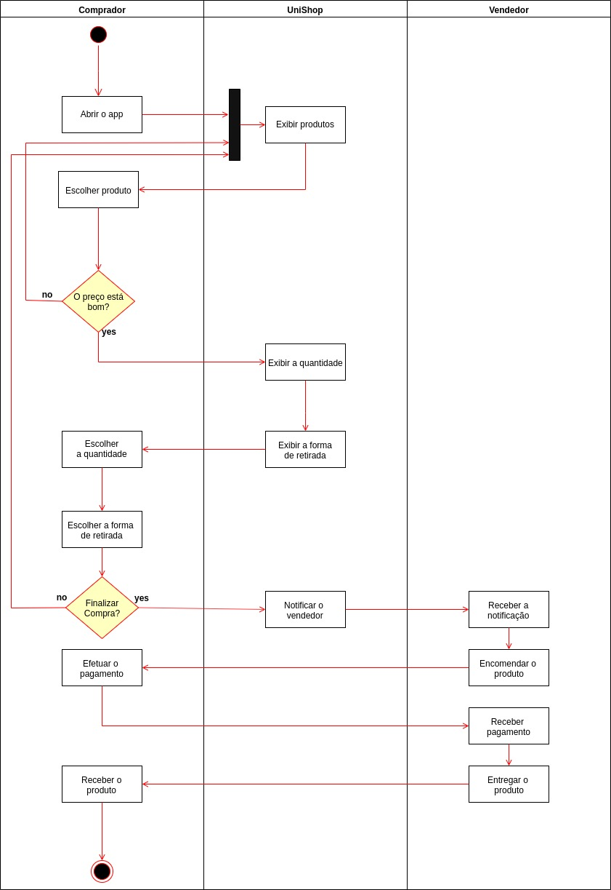

Modelagem Cronoz
A modelagem de software utiliza vários modelos para projetar um determinado sistema. Um modelo é uma simplificação da realidade, criado para facilitar o entendimento de sistemas complexos. Estes modelos podem abranger planos detalhados, assim como planos mais gerais com uma visão panorâmica do sistema. Para a criação dos diagramas adotamos o UML como padrão, tentando ser o mais fiel possível a sintaxe. Neste documento iremos apresentar a Modelagem Atual e Modelagem Proposta, assim como a arquitetura projetada para o sistema.
1. Equipe:
- Afonso Ramos Garcia Neto
- Danilo Souza Frazão
- Ícaro Santos Pereira
- João Vitor Matos dos Santos
- Willians Amaral de Oliveira
2. Modelagem Atual
Para representar a modelagem atual, utilizamos um diagrama de atividade que tem como objetivo mostrar um processo de negócio ou um software como um fluxo de trabalho por meio de uma série de ações. O fluxo abaixo elucida o processo de compra e venda sem a utilização do Cronoz nos domínios da EST.

3. Modelagem Proposta
Na modelagem proposta, utilizamos o diagrama de atividades novamente para descrever o mesmo processo acima (Venda e Compra). Com a diferença, que, inserimos a raia do sistema (Cronoz) que visa facilitar todo o processo.
